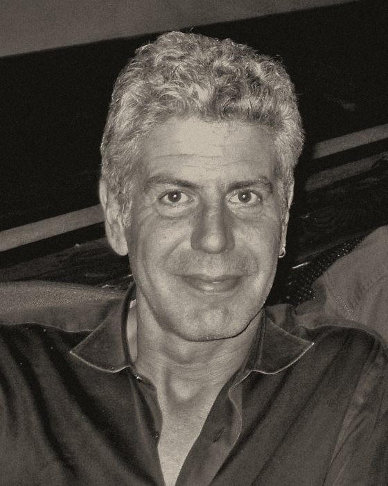

For Derek Nelson · 55 · October 22, 2026
Derek's Field Guide at 55

Today's special
The tab
Places you've been 0
On the road 0
Countries you've been 0
Tick the box on anything you have eaten, drunk, slept in or survived.
The four courses
A word from the house
Derek,
For years you've told me that one day you'd collect every bar, restaurant and shop Bourdain ever walked into, and then go hit every single one of them.
So I did the collecting. 2,025 places, 91 countries, four shows. The homework is done. The liver work is all yours.
"One day" is a lovely place, but nobody has ever found it on a map, and tomorrow has never once promised either of us that it will show up. Starting today feels right.
There's a line everybody pins on Bourdain, and nobody can prove he said it, which he would have loved: we don't travel to escape life, we travel so that life doesn't escape us.
Tick a box every time you make it somewhere, and watch the chili spread. Happy 55th, brother. Wishing you well on the road.
Christopher
Key
Prices vary by country · Gratuity not included · Closed places are marked, everything else check before you go